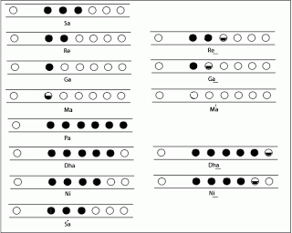

Komal and Teevra Swars
What are Komal and Teevra Swars?
We are clear with the concept of Shuddh Swars, they are the normal notes S R G m P D N S.
All notes except Sa and Pa have an alter ego i.e a variant, whose nature is either Komal or Teevra.
Shuddh Notes are noted as S,R,G,m,P,D,N.
Komal Notes are noted as r,g,d,n.
Teevra notes are noted as M.
The lower case notes indicated Komal swars except shuddh m , and Upper case represents Shuddh Swars except Teevra M. Teevra Ma is written as M where as shuddh ma is written as m.
The Komal Swars are Semi tone lesser than the Shuddh Swar whereas The Teevra Swars are a Semi Tone greater than the Shuddh Swars.
In C Scale following are the Komal and Teevra Swars. The black keys represent Komal r, g ,d and n and Teevra M.

How to play Komal and Tevra Swars on Bansuri?
Notes are given below for your reference.
For playing Komal or Teevra Swars, we ned to play half tone greater or lesser than the Shuddh Note.
Look at the picture given, to understand how to play them by closing half notes.
If you need more clarity regarding how to play Komal and Teevra Swars, watch the tutorial above.
Practise more and more and will meet in the next lesson, till then Happy Fluting!!